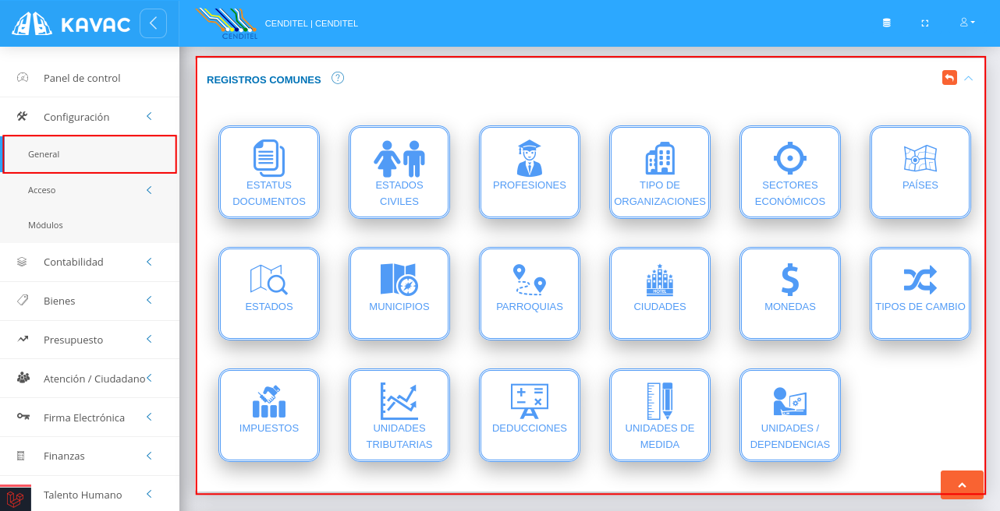
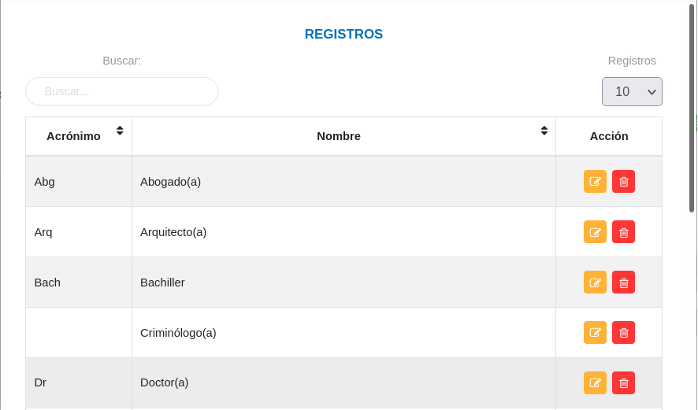
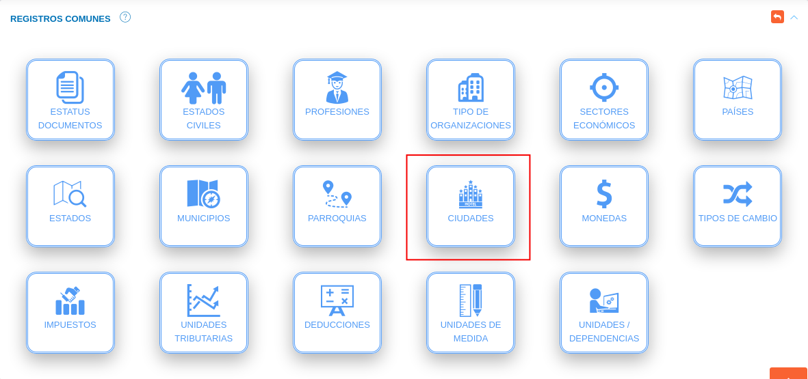
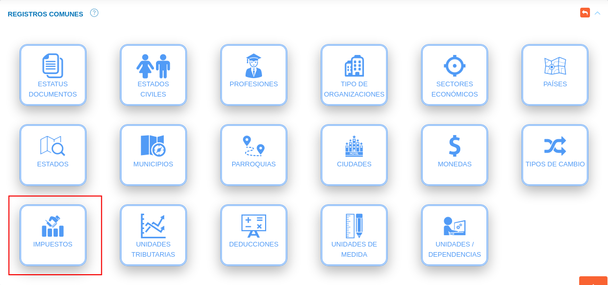

Configuración General del Sistema

Parámetros generales
A través de la sección parámetros generales, el usuario Administrador o algún otro usuario con permisos especiales sobre la Configuración del sistema puede habilitar o deshabilitar funcionalidades para la aplicación (Figura 10). A continuación se listan las funcionalidades a gestionar a través de la configuración de parámetros generales.
Funcionalidades:
-
Notificaciones: Mediante esta funcionalidad, el sistema activa las notificaciones de la aplicación.
-
Banner en reportes: Activa el uso de banner para reportes emitidos por el sistema. Para su correcto funcionamiento es necesario añadir un banner en la configuración de la organización usuaria.
-
Multi gestión: Mediante esta funcionalidad, el sistema activa la gestión administrativa para el empleo de múltiples organizaciones.
-
Firma electrónica: Mediante esta funcionalidad, el sistema activa la firma electrónica para todos los procesos del sistema.
Activar funcionalidades
Para activar funcionalidades de la aplicación se deben seguir los siguientes pasos:
Usuario Administrador
- Acceder al sistema e iniciar sesión con usuario y contraseña.
- Ingresar a través del panel lateral a Configuración > General y ubicarse en la sección Parámetros Generales (ver Figura).

- Indique la opción
 del botón de selección de las funcionalidades que desee habilitar.
del botón de selección de las funcionalidades que desee habilitar. - Presione el botón Guardar
 para registrar los cambios efectuados.
para registrar los cambios efectuados. - Presione el botón Cancelar
 para cancelar registro y regresar a la ruta anterior.
para cancelar registro y regresar a la ruta anterior. - Presione el botón Borrar
 para eliminar datos del formulario.
para eliminar datos del formulario. - Si desea recibir ayuda guiada, presione el botón
 .
. - Para retornar a la ruta anterior, presione el botón
 .
.
Registros comunes
La sección de registros comunes es una herramienta de la Configuración General del Sistema que permite al administrador o un usuario con permisos especiales sobre la Configuración, ajustar el sistema a la organización usuaria a través de parámetros configurables. Los datos registrados en esta sección serán considerados en todo el sistema.
Establecer registros comunes
Para establecer registros comunes se deben seguir los siguientes pasos:
Usuario Administrador
- Acceder al sistema e iniciar sesión con usuario y contraseña.
- Ingresar a través del panel lateral a Configuración > General y ubicarse en la sección Registros Comunes (ver Figura).

Estatus documentos
- Ingresar a la opción Estatus documentos dando clic sobre el recuadro.

Registro de estatus de documentos
- Complete el formulario Estatus de Documento (ver Figura). Seleccione un color dando clic sobre el recuadro del campo Color, asigne un nombre y descripción para el proceso en que se encuentra el documento a través de los campos Nombre y Descripción respectivamente, seleccione una acción que ejecuta a través del botón de selección .
- Presione el botón
 Guardar para registrar los cambios efectuados.
Guardar para registrar los cambios efectuados. - Presione el botón
 Cancelar para limpiar datos del formulario.
Cancelar para limpiar datos del formulario. - Presione el botón
 Cerrar para cerrar el formulario.
Cerrar para cerrar el formulario.

Gestión de registros de estatus de documentos
- Para editar un registro de estatus de documento presione el botón Editar
 del registro seleccionado de la tabla Registros. A continuación complete el formulario Estatus De Documento y presione el botón Guardar para almacenar los cambios efectuados.
del registro seleccionado de la tabla Registros. A continuación complete el formulario Estatus De Documento y presione el botón Guardar para almacenar los cambios efectuados. - Para eliminar un registro de estatus de documento presione el botón Eliminar
 del registro seleccionado de la tabla Registros.
del registro seleccionado de la tabla Registros.

Estados civiles
- Ingresar a la opción Estados civiles dando clic sobre el recuadro.

Registro de estados civiles
- Complete el formulario Estados Civiles (ver Figura). Asigne un nombre para el estado civil a registrar a través del campo Nombre.
- Presione el botón Guardar para registrar los cambios efectuados.
- Presione el botón Cancelar para limpiar datos del formulario.
- Presione el botón Cerrar para cerrar el formulario.

Gestión de registros de estados civiles
- Para editar un registro de estados civiles presione el botón Editar del registro seleccionado de la tabla Registros. A continuación complete el formulario Estados Civiles y presione el botón Guardar para almacenar los cambios efectuados.
- Para eliminar un registro de estados civiles presione el botón Eliminar del registro seleccionado de la tabla Registros.

Profesiones
- Ingresar a la opción Profesiones dando clic sobre el recuadro.

Registro de profesiones
- Complete el formulario Profesiones (ver Figura). Asigne un acrónimo(abreviatura) y nombre para la profesión a registrar.
- Presione el botón Guardar para registrar los cambios efectuados.
- Presione el botón Cancelar para limpiar datos del formulario.
- Presione el botón Cerrar para cerrar el formulario.

Gestión de registros de profesiones
- Para editar un registro de profesiones presione el botón Editar del registro seleccionado de la tabla Registros. A continuación complete el formulario Profesiones y presione el botón Guardar para almacenar los cambios efectuados.
- Para eliminar un registro de profesiones presione el botón Eliminar del registro seleccionado de la tabla Registros.

Tipo de organización
- Ingresar a la opción tipo de organización dando clic sobre el recuadro.

Registro de tipo de organización
- Complete el formulario Tipo de Organización (ver Figura). Asigne un acrónimo(abreviatura) y nombre para el tipo de organización a registrar.
- Presione el botón Guardar para registrar los cambios efectuados.
- Presione el botón Cancelar para limpiar datos del formulario.
- Presione el botón Cerrar para cerrar el formulario.

Gestión de registros de tipos de organizaciones
- Para editar un registro de tipo de organización presione el botón Editar del registro seleccionado de la tabla Registros. A continuación complete el formulario Tipo de Organización y presione el botón Guardar para almacenar los cambios efectuados.
- Para eliminar un registro de tipo de organización presione el botón Eliminar del registro seleccionado de la tabla Registros.

Sectores económicos
- Ingresar a la opción Sectores Económicos dando clic sobre el recuadro.

Registro de sector económico
- Complete el formulario Sector Económico (ver Figura). Asigne un nombre para el sector económico a registrar.
- Presione el botón Guardar para registrar los cambios efectuados.
- Presione el botón Cancelar para limpiar datos del formulario.
- Presione el botón Cerrar para cerrar el formulario.

Gestión de registros de sectores económicos
- Para editar un registro de sector económico presione el botón Editar del registro seleccionado de la tabla Registros. A continuación complete el formulario Sector Económico y presione el botón Guardar para almacenar los cambios efectuados.
- Para eliminar un registro de sector económico presione el botón Eliminar del registro seleccionado de la tabla Registros.

Países
- Ingresar a la opción Países dando clic sobre el recuadro.

Registro de países
- Complete el formulario País (ver Figura). Asigne un acrónimo(código de área) y nombre del país a registrar.
- Presione el botón Guardar para registrar los cambios efectuados.
- Presione el botón Cancelar para limpiar datos del formulario.
- Presione el botón Cerrar para cerrar el formulario.

Gestión de registros de países
- Para editar un registro de país presione el botón Editar del registro seleccionado de la tabla Registros. A continuación complete el formulario País y presione el botón Guardar para almacenar los cambios efectuados.
- Para eliminar un registro de país presione el botón Eliminar del registro seleccionado de la tabla Registros.

Estados
- Ingresar a la opción Estados dando clic sobre el recuadro.
Registro de estados
- Complete el formulario Estados (ver Figura). Seleccione un país asociado, asigne un código y nombre del estado a registrar.
- Presione el botón Guardar para registrar los cambios efectuados.
- Presione el botón Cancelar para limpiar datos del formulario.
- Presione el botón Cerrar para cerrar el formulario.
Gestión de registros de estados
- Para editar un registro de estado presione el botón Editar del registro seleccionado de la tabla Registros. A continuación complete el formulario Estados y presione el botón Guardar para almacenar los cambios efectuados.
- Para eliminar un registro de estado presione el botón Eliminar del registro seleccionado de la tabla Registros.
Municipios
- Ingresar a la opción Municipios dando clic sobre el recuadro.

Registro de municipios
- Complete el formulario Municipios (ver Figura). Seleccione el país y estado asociado, asigne un código y nombre del municipio a registrar.
- Presione el botón Guardar para registrar los cambios efectuados.
- Presione el botón Cancelar para limpiar datos del formulario.
- Presione el botón Cerrar para cerrar el formulario.

Gestión de registros de municipios
- Para editar un registro de municipio presione el botón Editar del registro seleccionado de la tabla Registros. A continuación complete el formulario Municipios y presione el botón Guardar para almacenar los cambios efectuados.
- Para eliminar un registro de municipio presione el botón Eliminar del registro seleccionado de la tabla Registros.
Parroquias
- Ingresar a la opción Parroquias dando clic sobre el recuadro.

Registro de parroquias
- Complete el formulario Parroquias (ver Figura). Seleccione el país, estado y municipio asociado, asigne un código y nombre de la parroquia a registrar.
- Presione el botón Guardar para registrar los cambios efectuados.
- Presione el botón Cancelar para limpiar datos del formulario.
- Presione el botón Cerrar para cerrar el formulario.

Gestión de registros de parroquias
- Para editar un registro de parroquia presione el botón Editar del registro seleccionado de la tabla Registros. A continuación complete el formulario Parroquias y presione el botón Guardar para almacenar los cambios efectuados.
- Para eliminar un registro de parroquia presione el botón Eliminar del registro seleccionado de la tabla Registros.

Ciudades
- Ingresar a la opción Ciudades dando clic sobre el recuadro.

Registro de ciudades
- Complete el formulario Ciudades (ver Figura). Seleccione el país y estado asociado, asigne un nombre de la ciudad a registrar.
- Presione el botón Guardar para registrar los cambios efectuados.
- Presione el botón Cancelar para limpiar datos del formulario.
- Presione el botón Cerrar para cerrar el formulario.

Gestión de registros de ciudades
- Para editar un registro de ciudad presione el botón Editar del registro seleccionado de la tabla Registros. A continuación complete el formulario Ciudades y presione el botón Guardar para almacenar los cambios efectuados.
- Para eliminar un registro de ciudad presione el botón Eliminar del registro seleccionado de la tabla Registros.

Monedas
- Ingresar a la opción Monedas dando clic sobre el recuadro.

Registro de monedas
- Complete el formulario Monedas (ver Figura). Seleccione el país, asigne un símbolo, nombre y cantidad de decimales de la moneda a registrar.
- Para configurar una moneda registrada por defecto en el sistema indique la opción del botón de selección del campo Por defecto.
- Presione el botón Guardar para registrar los cambios efectuados.
- Presione el botón Cancelar para limpiar datos del formulario.
- Presione el botón Cerrar para cerrar el formulario.
Gestión de registros de monedas
- Para editar un registro de moneda presione el botón Editar del registro seleccionado de la tabla Registros. A continuación complete el formulario Monedas y presione el botón Guardar para almacenar los cambios efectuados.
- Para eliminar un registro de moneda presione el botón Eliminar del registro seleccionado de la tabla Registros.

Tipos de cambio
- Ingresar a la opción Tipos de Cambio dando clic sobre el recuadro.

Registro de tipo de cambio
- Complete el formulario Tipos de Cambio (ver Figura). Seleccione la moneda de origen y la moneda de cambio a través de los campos De y A respectivamente, especifique las fechas de vigencia del tipo de cambio a través de los campos Fecha de inicio y Fecha fin(no obligatorio), asigne el monto del tipo de cambio e indique si el tipo de cambio se encuentra activo haciendo uso del botón de selección .
- Presione el botón Guardar para registrar los cambios efectuados.
- Presione el botón Cancelar para limpiar datos del formulario.
- Presione el botón Cerrar para cerrar el formulario.

Gestión de registros de tipos de cambio
- Para editar un registro de tipo de cambio presione el botón Editar del registro seleccionado de la tabla Registros. A continuación complete el formulario Tipos de Cambio y presione el botón Guardar para almacenar los cambios efectuados.
- Para eliminar un registro de tipo de cambio presione el botón Eliminar del registro seleccionado de la tabla Registros.

Impuestos
- Ingresar a la opción Impuestos dando clic sobre el recuadro.

Registro de impuestos
- Complete el formulario Impuestos (ver Figura). Asigne un nombre, descripción, fecha de entrada en vigencia y valor porcentual del impuesto a registrar.
- Indique si el impuesto afecta cuenta de iva y se encuentra activo a través del botón de selección de los campos Afecta cuenta de IVA y Activo.
- Presione el botón Guardar para registrar los cambios efectuados.
- Presione el botón Cancelar para limpiar datos del formulario.
- Presione el botón Cerrar para cerrar el formulario.

Gestión de registros de impuestos
- Para editar un registro de impuestos presione el botón Editar del registro seleccionado de la tabla Registros. A continuación complete el formulario Impuestos y presione el botón Guardar para almacenar los cambios efectuados.
- Para eliminar un registro de impuesto presione el botón Eliminar del registro seleccionado de la tabla Registros.

Unidades tributarias
- Ingresar a la opción Unidades Tributarias dando clic sobre el recuadro.

Registro de unidades tributarias
- Complete el formulario Unidades Tributarias (ver Figura). Indique la fecha de vigencia a través de los campos Fecha de inicio y Fecha fin, Asigne un valor de la unidad tributaria e indique a través del botón de selección si se encuentra activa.
- Presione el botón Guardar para registrar los cambios efectuados.
- Presione el botón Cancelar para limpiar datos del formulario.
- Presione el botón Cerrar para cerrar el formulario.
Gestión de registros de unidades tributarias
- Para editar un registro de impuestos presione el botón Editar del registro seleccionado de la tabla Registros. A continuación complete el formulario Impuestos y presione el botón Guardar para almacenar los cambios efectuados.
- Para eliminar un registro de impuesto presione el botón Eliminar del registro seleccionado de la tabla Registros.

Deducciones
- Ingresar a la opción Deducciones dando clic sobre el recuadro.

Registro de deducciones
- Complete el formulario Deducciones (ver Figura). Asigne un nombre para el tipo de deducción, seleccione una cuenta contable(no obligatorio), agregue una descripción, establezca una formula asociada al tipo de deducción haciendo uso de la calculadora e indique si el tipo de deducción se encuentra activa a través del botón de selección del campo Activa.
- Presione el botón Guardar para registrar los cambios efectuados.
- Presione el botón Cancelar para limpiar datos del formulario.
- Presione el botón Cerrar para cerrar el formulario.
Nota
A través de esta funcionalidad se registran beneficios fiscales o deducciones enmarcados en la normativa jurídica del país en cuestión y los reglamentos de la organización. Esta funcionalidad esta vinculada directamante con el módulo de finanzas.
Uso de la calculadora:
- Presione el botón C para reiniciar valores de la formula.
- Presione el botón DEDUCIBLE para agregar la base deducible a la formula.

Gestión de registros de deducciones
- Para editar un registro de deducción presione el botón Editar del registro seleccionado de la tabla Registros. A continuación complete el formulario Deducciones y presione el botón Guardar para almacenar los cambios efectuados.
- Para eliminar un registro de deducción presione el botón Eliminar del registro seleccionado de la tabla Registros.

Unidades de medida
- Ingresar a la opción unidades de medida dando clic sobre el recuadro.

Registro de unidades de medida
- Complete el formulario Unidades de Medida (ver Figura). Asigne un acrónimo(abreviatura), nombre y descripción de la unidad de medida a registrar.
- Presione el botón Guardar para registrar los cambios efectuados.
- Presione el botón Cancelar para limpiar datos del formulario.
- Presione el botón Cerrar para cerrar el formulario.
Gestión de registros de unidades de medida
- Para editar un registro de unidad de medida presione el botón Editar del registro seleccionado de la tabla Registros. A continuación complete el formulario Unidades de Medida y presione el botón Guardar para almacenar los cambios efectuados.
- Para eliminar un registro de unidad de medida presione el botón Eliminar del registro seleccionado de la tabla Registros.

Unidades/Dependencias
- Ingresar a la opción Unidades/Dependencias dando clic sobre el recuadro.

Registro de unidad/dependencia
- Complete el formulario Unidades/Dependencias (ver Figura). Seleccione una organización a la cual se encuentra asociado el departamento(unidad/dependencia), en caso de que dependa o se encuentre asociado a otro departamento seleccione este departamento a través del campo Depende de, asigne una abreviatura a través del campo Siglas y defina un nombre para el departamento a registrar.
- Indique la opción del botón de selección de los siguientes campos:
- Solicita almacén: requiere registro de almacén.
- Activo: registro de departamento como activo.
- Administrativo: departamento del área administrativa de la organización.
- Presione el botón Guardar para registrar los cambios efectuados.
- Presione el botón Cancelar para limpiar datos del formulario.
- Presione el botón Cerrar para cerrar el formulario.
Gestión de registros de unidades/dependencias
- Para editar un registro de país presione el botón Editar del registro seleccionado de la tabla Registros. A continuación complete el formulario País y presione el botón Guardar para almacenar los cambios efectuados.
- Para eliminar un registro de país presione el botón Eliminar del registro seleccionado de la tabla Registros.

Configurar organización
Para iniciar el registro de una organización se deben seguir los siguientes pasos:
Usuario Administrador
- Acceder al sistema e iniciar sesión con usuario y contraseña.
- Ingresar a través del panel lateral a Configuración > General y ubicarse en la sección Configurar Organización (ver Figura).
Logotipo y banner institucional
- Para establecer un logotipo y banner institucional haga clic sobre los recuadros correspondientes que tienen por titulo IMAGEN (ver Figura).
- Seleccione un archivo desde su directorio local (ver Figura ).


Datos básicos
- Complete el formulario del apartado Datos Básicos. Tenga en consideración completar los campos obligatorios que son requeridos para el registro de una institución.
Nota
Los campos de selección del apartado Datos básicos incluyen información configurada previamente a través de los registros comunes del sistema. Si se requiere incluir información diferente a la que se encuentra por defecto se recomienda agregar estos registros en la configuración de registros comunes.
Para agregar registros comunes acceda a Configuración > General > Registros Comunes.

- País: Para crear un nuevo registro de país acceda a Configuración > General > Registros Comunes > Países.
- Estado: Para crear un nuevo registro de estado acceda a Configuración > General > Registros Comunes > Estados.
- Municipio: Para crear un nuevo registro de municipio acceda a Configuración > General > Registros Comunes > Municipios.
- Ciudad: Para crear un nuevo registro de ciudad acceda a Configuración > General > Registros Comunes > Ciudades.
- Adscrito a: Para crear un nuevo registro de dependencia acceda a Configuración > General > Registros Comunes > Unidades/ Dependencias.
- Sector: Para crear un nuevo registro de sector económico acceda a Configuración > General > Registros Comunes > Sectores Económicos.
- Tipo: Para crear un nuevo registro de tipo de organización acceda a Configuración > General > Registros Comunes > Tipos de organizaciones.

Datos complementarios
- Complete el formulario del apartado Datos Complementarios. Tenga en cuenta que todos los campos de este apartado no son obligatorios, por lo que no se requiere agregar información de forma obligatorio para completar el registro de una organización.
- Presione el botón Guardar para registrar los cambios efectuados.
- Presione el botón Cancelar para cancelar registro y regresar a la ruta anterior.
- Presione el botón Borrar para eliminar datos del formulario.
- Si desea recibir ayuda guiada presione el botón .
- Para retornar a la ruta anterior presione el botón .
Editar organización
Nota
Los pasos que se describen a continuación para la actualización de datos de una organización son válidos solo cuando existe el registro de una sola organización y la opción multi gestión del sistema se encuentra desactivada.
Para más información consule el apartado Multi gestion de este manual.
Para actualizar los datos de una organización registrada se requiere seguir lo siguientes pasos:
- Ingresar a través del panel lateral a Configuración > General y ubicarse en la sección Configurar Organización (ver Figura).
- Actualice los datos del formulario siguiendo los pasos descritos en el apartado Registrar organizacion.
- Presione el botón Guardar para registrar los cambios efectuados.
Multi gestión
El sistema KAVAC incorpora la gestión de multiples organizaciones desde una misma instancia. Esta funcionalidad permite la integración entre organizaciones, abriendo paso a la gestión y control sobre recursos organizacionales y automatizando las transacciones entre dos o más organizaciones.
Esta funcionalidad se encuentra desactivada por defecto, para activar dicha funcionalidad se requiere seguir los siguientes pasos:
- Ingresar a través del panel lateral a Configuración > General y ubicarse en la sección Parámetros Generales (ver Figura).

- Indique la opción del botón de selección del campo Multi gestión para habilitar la gestión de multiples organizaciones.
- Presione el botón Guardar para registrar los cambios efectuados.
- Presione el botón Cancelar para cancelar registro y regresar a la ruta anterior.
- Presione el botón Borrar para eliminar datos del formulario.
- Si desea recibir ayuda guiada presione el botón .
- Para retornar a la ruta anterior presione el botón .
Gestionar organizaciones
La gestión de organizaciones se lleva a cabo a través del apartado Organizaciones Registradas, este apartado se encuentra disponible si la opción Multi gestión se encuentra activa.
- Para acceder a esta sección debe dirigirse a Configuración > General y ubicarse en la sección Registrar Organización apartado Organizaciones Registradas (ver Figura).
A través del apartado Organizaciones Registradas se listan los registros de Organizaciones en una tabla.
Desde este apartado se pueden llevar a cabo las siguientes acciones:
- Registrar organizaciones.
- Consular registros.
- Editar registros.

Registrar organización
- Presione el botón Crear registro
 ubicado en la parte superior derecha del apartado Organizaciones Registradas (ver Figura )
ubicado en la parte superior derecha del apartado Organizaciones Registradas (ver Figura )

- A continuación complete el formulario siguiendo los pasos descritos en el apartado Configurar organización.
- Presione el botón Guardar para registrar los cambios efectuados.
Consular registros
- Presione el botón Consultar registro
 ubicado en la columna titulada Acción de un registro de organización que se prefiere consultar.
ubicado en la columna titulada Acción de un registro de organización que se prefiere consultar.

- A continuación el sistema despliega una sección donde se describen los datos de la organización seleccionada.
Editar registros
- Presione el botón Editar registro ubicado en la columna titulada Acción del registro de organización que se desee seleccionar para actualizar datos.
- Actualice los datos del formulario siguiendo los pasos descritos en el apartado Configurar organización.
- Presione el botón Guardar para registrar los cambios efectuados.